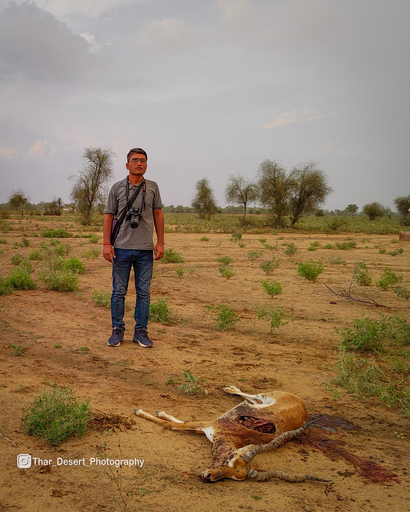
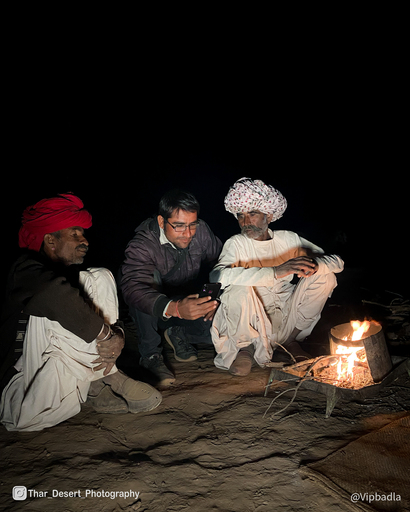
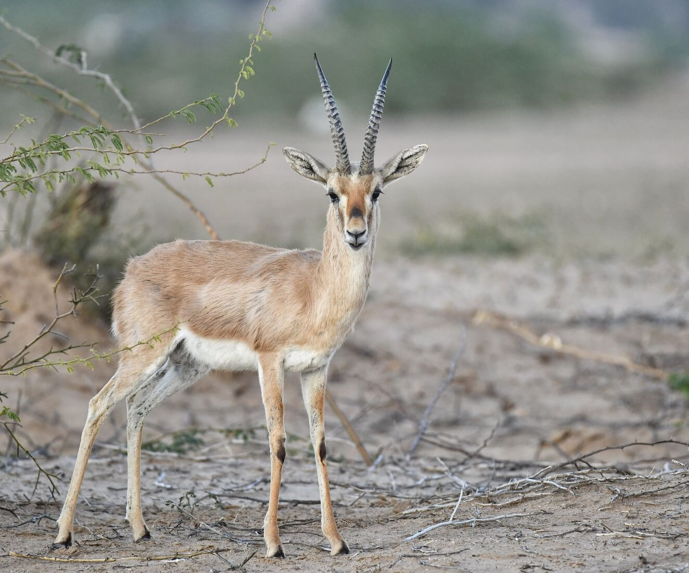
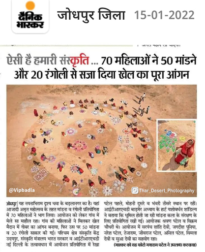

Posted by sarvan patel on Wednesday, December 15, 2023
Dhawa Doli Wildlife Sanctuary
1. Sanctuary Location and Geography: Dhawa Doli Wildlife Sanctuary is nestled in the serene landscapes of Sarvan, offering an area of approximately [insert area here] square kilometers. The sanctuary's geography features diverse terrains, including dense forests, meadows, and water bodies. Its strategic location makes it a haven for wildlife enthusiasts, providing a unique opportunity to explore the rich biodiversity of the region.
2. Flora and Fauna: The sanctuary is home to a remarkable variety of flora and fauna. Lush greenery and vibrant flowers characterize the sanctuary's flora, creating a picturesque environment. The diverse fauna includes [mention notable species], making it a perfect destination for nature lovers and wildlife photographers.
3. Avian Paradise: Dhawa Doli Wildlife Sanctuary boasts a diverse avian population, making it a paradise for birdwatchers. From colorful songbirds to majestic raptors, the sanctuary provides a unique opportunity to observe and appreciate the beauty of various bird species in their natural habitat.
4. Safari Adventures: Explore the sanctuary's wonders through exciting safari adventures. Jeep safaris and guided treks offer a chance to witness wildlife in action and experience the sanctuary's breathtaking landscapes. Knowledgeable guides enhance the experience by sharing insights into the behavior and habitat of the sanctuary's inhabitants.
5. Conservation Efforts: Dhawa Doli Wildlife Sanctuary is committed to the conservation of its unique ecosystem. Conservation initiatives focus on protecting endangered species, preserving habitats, and raising awareness about the importance of biodiversity. Visitors can contribute to these efforts by adhering to ethical wildlife tourism practices.
6. Immersive Desert Camps:
To complete the desert experience, many tourists opt for immersive desert camps located within and around
the park. These camps offer a taste of traditional Rajasthani hospitality, with accommodations ranging
from luxury tents to rustic desert huts. Visitors can savor local cuisine, enjoy traditional folk music
and dance performances, and take part in activities like camel rides and desert treks.
Best Time to Visit
Winter Wonderland (November to February):
During this season, daytime temperatures are pleasantly cool, ranging from 15°C to 25°C (59°F to 77°F),
making outdoor activities enjoyable. The crisp winter air enhances wildlife sightings, especially for
birdwatchers.
Spring Awakening (March to April):
Spring marks the transition from winter to summer. The temperatures gradually rise, making it a
comfortable time for exploration. The desert landscape comes alive with vibrant blooms.
Summer Adventures (May to August):
While summer months can be scorching with temperatures above 40°C (104°F) or higher, it presents a unique
opportunity for those seeking an adventure in extreme conditions. You can explore the park's stark
landscapes and still encounter wildlife adapted to the heat.
Monsoon Magic (July to September):
The monsoon season brings a touch of green to the desert, coaxing some greenery from the arid soil. The
park takes on a mystical aura as dark monsoon clouds contrast with golden sands.
Autumn Tranquility (October):
As the monsoon recedes, October offers a sense of tranquility. The weather is cooler than summer, and the
landscape still carries hints of greenery from the rains. Ideal for photography and peaceful experiences.
Ultimately, the best time to visit depends on your preferences and what you hope to
experience. Whether you seek the vibrancy of winter, the blossoming of spring, the challenge of summer,
the allure of monsoon, or the tranquility of autumn, the park offers a unique encounter with the desert's
ever-changing beauty and wildlife.
Image Gallery of Dhawa Doli Wildlife Santuary through sarvan's lens




Call To Action
Ready For Unforgatable Travel. Remember Us!
"Prepared to Immerse in Unforgettable Thar Desert Exploration with Sharvan Patel .
Let Your Journey Echo Our Warmth and Expertise Forever."